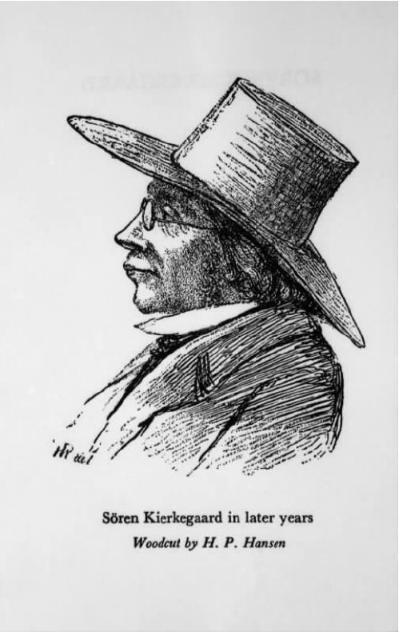

克尔凯郭尔在某种或多种严格意义上认为基督教是自我矛盾的——无论这一观点还有多少可争论的空间，至少有一点是毋庸置疑的：他从未偏离过一个观点，即基督教的终极意义只能通过个人的吸收和内在的信奉才能把握。如此，他在把信仰这一概念从他认为掩盖了其基本特质的种种误解中分解出来时，可以说通过了不同的联系，又一次回到构成他思想的试金石——某一特定的人类主体，即“存在的个体”这一范畴。他不厌其烦地赞扬苏格拉底（尽管他视其为异教徒）第一个引入关键的概念，这一概念“具有决定性的辩证力量”。他为自己感到自豪，因为是他着手在当代的背景下重新肯定和突出这一观点的重要性。他认为，在这样的背景下，人们普遍不是无法洞察其意义，就是顽固地对其真实含意置若罔闻。不过，他怎样解释这一范畴应该放在具体的基督教视角下去理解，这当然还是个问题。谁是这个孤独的、负责任的、立于克尔凯郭尔世界之中心的“我”？这个“我”的需要是什么，如何满足这些需要？对他的两部作品——《焦虑的概念》和《致死的疾病》——的主题进行简要地思考，可能有助于我们理解这里提到的问题。
虽然上述两部作品常被称为克尔凯郭尔的“心理学之作”，不过，如果一个现代读者认为它们遵循心理学更为常见的研究方法，那么他可能会感到失望。这些作品不但经常提到天真、负罪和拯救这样的观念，并且其风格是哲学导向的，观点密集，不易看透。到处是抽象概念，而克尔凯郭尔并不总是打算解释他选用的这些深奥的术语。结果是，有些话产生的困惑不亚于黑格尔的《精神现象学》中那些更为晦涩的章节。这也许并非完全是巧合。尽管人人都知道克尔凯郭尔反对这位德国思想家的结论，但他并不讨厌吸收后者偏爱的观念和分类，即使这意味着将它们用于截然不同的目的。此外，黑格尔运用了其中一些观点描述他重点关注的某一情境。我和其他的评论家一样，认为我们首先应该看到，克尔凯郭尔对同样情境的分析是以黑格尔为背景的。
黑格尔把这里提到的情境和宗教联系在一起，归于“不快意识”。正如我们在第二章已经看到的，这一表述被用来界定人的历史发展中之某一阶段。在这一阶段，人认识到自己是一个分离的存在，具有“双重性”和“分裂的内在”。一方面，他意识到自己是一个有限的个体，立于经验世界中，服从于变幻沧桑的时世。另一方面，自己拥有一个“不可改变的”或理想的本质这一想法缠绕着他，这一本质独立地支持困扰他的经验现实的种种偶然性。他无法调和自己本性中的这两个方面。结果是，他认同第一个方面，而将第二个方面理解为一个先验的“他者”或“异己的存在”，他与这种“他者”或“异己的存在”是对立的，同时努力与之和解。不过，他这样看待自己的情境是不真实的；一旦人的心灵最终在不成熟的生活模式和意识模式中克服其自我疏远，一旦心灵处于某一位置，因而认识到它和它所处的这个世界体现了一种无限的或绝对的理性本质，而这种本质只能在有限中并以此种有限作为媒介才能得以理解，那么，这一情境的真正意义便会一目了然。
我们没有必要复述克尔凯郭尔对唯心主义形而上学的反对。正是依据这一反对，他剖析宗教观的来源及其潜在的内涵。他在一个框架里提出自己的方法，这一框架以传统有神论的双重视角为前提，他并不打算取代这种视角。但是同时，黑格尔在对不快意识的特别立场进行讨论时充满了对立——也许这并不奇怪，他在论述个人在宗教环境里的地位和渴望时，这些对立有可能占据主要地位。他不仅认为有限与永恒的对立、人与神的对立在本体论上是基本的，而且，这种对立还最终主导了他对人性及其基本倾向的描述。
克尔凯郭尔的心理学著作遵循我们所读出的《附言》的一般要旨，强调行为和选择二者的有生命视角，进而用动态和关于意志的术语描述人的个性结构。从一个角度看，人可以说是“灵魂和物质的综合体”，紧密结合了精神和肉体的特性。如此看来，他可以说和世界的其他万物一样，都属于一类实体，这类实体的特点就是拥有某种明确的品性。不过，仅仅从这一点来理解个体，将看不到一个事实，即他可以超越自己的天性和外在的环境，他必须也被理解成是“精神”的——克尔凯郭尔把这一重要的维度与获得“自我”这一观点联系起来。众所周知，他把后者晦涩地界定为“一种关系，它把自己和自己联系起来”（《致死的疾病》第13页），这一层面则是其基础。虽然我们已经花了很多时间和精力，试图确定他的这番怪话到底是什么意思，但是在这里，我只想提出在我看来包含了这番话的复杂讨论的一个要点。要做一个人，并不意味着存在于存在的模式中，而是存在于生成的模式中。一个人要变成什么样，由他自己负责，这是他意志的产物，哪怕（似乎常常如此）他不想面对，只想躲开。并且，我们可以认为，每一个个体都意识到——无论是明确地还是无意识地——在他对环境现时的看法和在某种意义上可以得到的其他选择之间存在着一种张力。正如克尔凯郭尔在某处提到的，活着的人没有谁“不暗暗怀着一种不停歇的内在冲突，一种不和谐……一种对存在的某种可能性的焦虑或对自己的焦虑”（《致死的疾病》第22页）。不过，这些令人不安的暗示和态度不应该被认为只限于某些历史阶段，一旦人的心灵最终（用黑格尔安慰人的话来说）“安然”立于这个世界上，它们注定要消失。相反，克尔凯郭尔认为它们揭示了人的本性，它们以各种各样的形式彰显在每个人的生活面相中。不过，果真如此的话，照他说来什么才是他提到的这种不安或忧虑的真正意义呢？
克尔凯郭尔关于焦虑或恐惧（Angst）的观点非常有名，既通过他对20世纪哲学家如萨特和海德格尔不可置疑的影响，也因为它鲜明地突出了心灵的某些明显的“无目标”状态，我们在日常生活这一层面上都可认识到这种状态。而且，他对上述观点进行了复杂而影响深远的论述，涉及了广泛的现象，包括童年时代对神秘或怪诞之物的着迷，以及后来与性冲动的萌发有关的种种预兆。的确，作为展开讨论的语境，这一观点所包括的不同方面也许有助于我们解释属于不同派别的思想家们对他的分析持有什么看法。这些思想家中有许多人根本不赞同这一概念的独特立场。
图14 “自由的晕眩”；一位蹦极者被“能够做到的可能性”所吸引，同时又被这种可能性所拒斥。
上面引用的话暗示了其中的一个方面与对自由的觉悟有关。克尔凯郭尔早在关于主体的著述中就清楚地表明，令他感兴趣的焦虑不应与诸如害怕这样的情感混为一谈。害怕有明确的对象，特别指向外界的事物或事件。相反，与焦虑有关的是“某种虚无的东西”，是代表了“自由的真实性，这种真实性是可能性之可能性”（《焦虑的概念》第42—43页）。萨特有一次明确提到克尔凯郭尔的独特之处。他认为，如此构建的焦虑在本质上是“我自己面前的焦虑（angoisse）”：就像是害怕一样，我不会作为环境的一个被动的牺牲品去关注会有什么发生在我身上。相反，这里的情境源于我意识到自己是一个积极的主体，能够面对和回应各种可能性，没有任何东西能在客观上强迫我去选择一种回应而不是另一种回应——在这里，我是唯一的仲裁者，想做什么完全取决于我自己。萨特援引了“蹦极”的例子。据说一个人与其说害怕真正从悬崖上掉下去，还不如说害怕的是这个想法：如果他选择“把自己扔下去”，他就能做到。这令人想起——无疑是有意地——克尔凯郭尔自己运用的一个意象，即把焦虑比做俯视裂开豁口的深渊时的感觉。因此在某处，他把这描述成“自由的晕眩”，发生在当“自由俯视自己的可能性，抓住有限性来支撑自己”时（《焦虑的概念》第61页）。然而，克尔凯郭尔在其他地方又把它说成是“和谐的反感 和令人反感的和 谐 ”；主体被描述为摇摆不定——令人不安的“能够 之可能性”既令它着迷，又令它厌恶（《焦虑的概念》第42页及其后）。
这些描述所感染的紧迫与紧张的气氛预示着后来的许多存在主义著述在这个主题上的基调更为突出。这种基调常常招来批评，说它反映了一种一再出现的倾向，该倾向夸张或过分戏剧化日常思想和行为这些大片领域的意义。不过，无论此种批评在其他方面具有何种可以想见的力量，克尔凯郭尔绝对拒绝承认它与自己的观点有任何关联。萨特描述面对自由的焦虑，也许成功地表达了他的一部分想法，不过，他最为关心的是自己的想法在宗教上有什么意义。这样理解的话，它涉及的因素属于另一种秩序，不同于他那些更为关注现世的后继者所引证出来的因素。他相信这些因素对我们作为人类的发展和最终命运来说关系重大。
实际上，焦虑这一概念首先出现在他对原罪的讨论中。在关于堕落的圣经故事里，亚当开始不知善恶之别，也不了解善恶所引起的一切后果。即便如此，禁止他吃知识树上的果子还是“使他开始意识到自由的可能性”。克尔凯郭尔认为这个故事以神话的形式阐明了在每一位个体的经验中，“自然而真诚的直接性”这一状态以何种方式转化为自我意识和自我决定的状态。在天真这一状态中，“人的精神在做梦”：虽然他还不知道自己在精神上想做什么或想成为什么，但他已经有了不确定的预感，感到自己作为一个有能力塑造自我及其未来的自由存在所具有的潜力——“这是天真深刻的秘密：它同时也是焦虑”（《焦虑的概念》第41页）。不过，这里提到的潜力是什么，个体又如何能注意到它的特性呢？按照克尔凯郭尔所描述的情境，似乎他首先只能通过体验罪过来注意到这一点。因此，他所谈到的基本的焦虑成了罪过的前提条件或“假设”，因而没有构成它必要的原因。后者不受任何宿命论或科学解释的影响，人人“只会通过自身”而变得有罪。另一方面，如果认为这种焦虑预示的仅仅是有可能犯下罪过，那是不正确的。因为它也间接预示了认识到这样的事实，即可以把一个人有限的支配权的源泉引向截然不同的道路，人认识到自己作为单个自我的真正身份在于他与永恒、与神的联系，而不是与时间的或世俗的思虑的联系，后者使他偏离自己正当的目标。在正确理解人的存在后，这种存在的形式便成了“持续的奋斗”，追求超越世俗领域的完满；我们只有自由地献身于一种超越客观知识和理性理解的力量，才能获得这种完满。“自我”如此“乐意成为自我，它显然依赖于将其建立起来的力量”（《致死的疾病》第49、131页）。克尔凯郭尔断言，这却是“信仰的公式”。因此，焦虑有可能导致我们那“实质上的一跃”，不是跃入罪过之中，远离上帝，而是跃入其对立面：“与罪过对立的”是信仰而不是美德（《致死的疾病》第82页）。换言之，我们再次回到了克尔凯郭尔在这里所称的“基督教之关键标准”——接受一种客观的不确定性，那是理性无法把握的，但有了神助，再经由它，人就可以获得拯救。
以上代表了一个复杂讨论最基本的框架，它的主要特点在于它强调人们无法在所要求的意义上实现自我时有多种不同的表现。黑格尔的评论家肯定会质疑：假如一个人在满足自己作为这世界的一员所拥有的需要和利益时不得不承受它的局限性，那么这里所涉及的自我实现是否妥当。此外，它的积极内容仍然难以捉摸，并最终是神秘莫测的——也许在此背景下，这是不可避免的。不过，人们仍经常赞扬克尔凯郭尔，因为他洞察了种种精神失衡和疾病。两部所谓的心理学著作实际上充满着具体的例子，它们常常体现出敏锐的洞察力。他研究人们为了逃避挥之不去的绝望的本性，试图借用权宜之计让自己镇静或转换注意力——在这种时候，这一点变得特别明显。在分析这些例子时，他充分利用自己与众不同的才能去界定阻碍自我认识和自我理解的幻觉或辩解。这种分析令人想起他早先对《非此即彼》等书中所举的那些例子的剖析。他也竭力区分这些例子和另外的例子，在后一种情形下一个人可能通过骄傲或挑衅，有意识地拒绝自己获得改变和拯救的可能性——在这里，“没有什么含糊费解可以充当缓冲的借口”（《致死的疾病》第42页）。常常地，许多观点令人信服的特性和力量因此带上了冲突和危机的印记，这些冲突和危机出现在他自己的个人经历中，记载在他的日记中。不过，在评估他在这一点上所说的一切时，困难还是出现了。在某种程度上，这是因为他倾向于灵活地处理关键概念，从而使运用它们时的界限摇摆不定，不清不楚。他的许多作品都有这个特点。因此，他在运用《致死的疾病》的中心观念——绝望——的时候，它的意义有时相对严格，与其平常的用法没有区别；可是在更多时候，它似乎涵盖了——虽然以意味深长的不同形式——排斥信仰出现的任何条件。无疑，这进而与一个事实有关，即他的心理学形成于这样的框架中，这一框架的限制因素最终由他写作时的宗教观点来决定。人性的结构导致个人只能通过接受基督教教义，才能使自己从绝望中解脱出来，满足他作为一个人的根本渴望——这是设想，而非争论。不过，这意味着在解读克尔凯郭尔的观点时，我们并非总是那么容易分清什么才算是真正的经验分析，什么更像是先验的条件。

图15 克尔凯郭尔戴帽像。